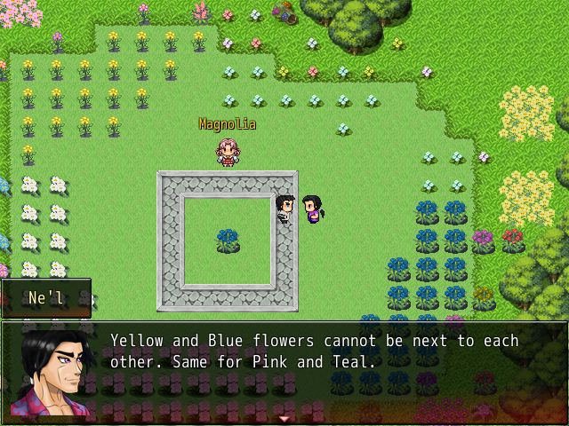
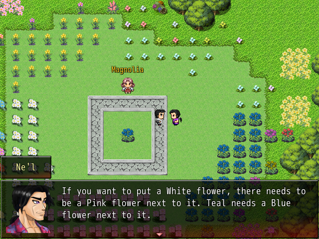
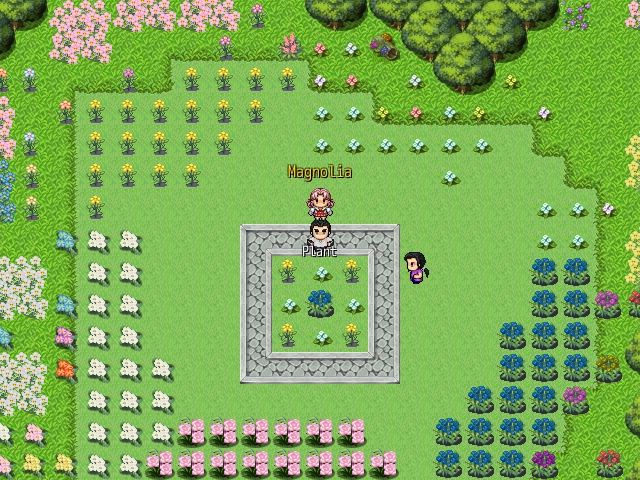
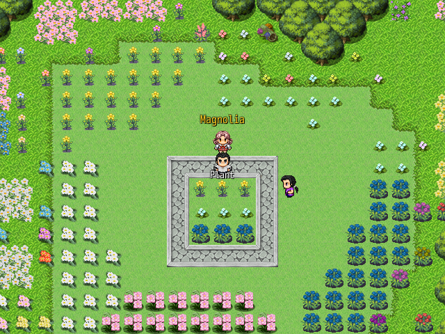
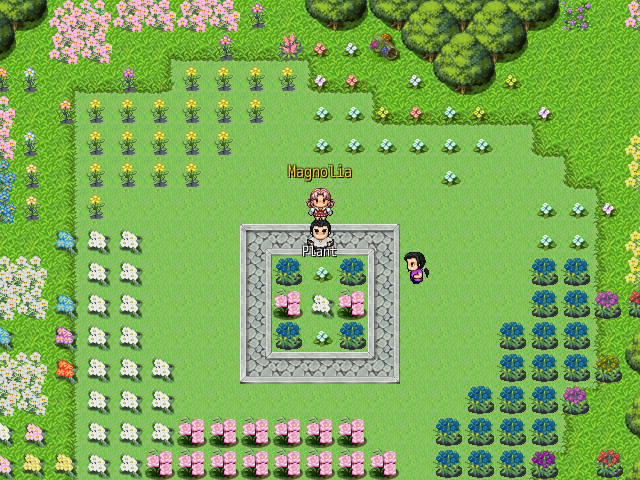

A Master's Arrangement - Flower Arrangement Puzzle
In A Master's Arrangement, there is a puzzle that involves placing flowers on a flowerbed in particular arrangements. Here are some hints to help you solve it.
Hint: Ne'l's Advice
|  |  |
Ne'l will give advice on the rules of arrangement. The first hint explains what is not allowed: yellow-blue adjacency and pink-teal adjacency. The second hint explains what must be followed: white-pink adjacency and teal-blue adjacency. Keep in mind these rules when placing the flowers.
Solutions and Explanations
Stop scrolling at this point if you would like to solve the puzzle on your own!
Magnolia will place a flower in the center and you will have to work around it using the required flowers.
Solution: Arrangement 1
We must work with a blue flower in the center. With the rule of teal-blue adjacency, we must put the four teal flowers around the blue flower. The four yellow flowers must go in the corners.
Solution: Arrangement 2
With a white flower in the center, there needs to be a T shape created using the pink flower and two white flowers due to white-pink adjacency. Here is one of the possible arrangements.
Solution: Arrangement 3
With a teal flower in the center, we must place a blue flower next to it due to teal-blue adjacency. We also need take into account yellow-blue adjacency, leaving us with either rows or columns, as shown above (one of the possible solutions).
Solution: Arrangement 4
We need to consider pink-teal adjacency now, in addition to teal-blue and white-pink adjacency. Here is one of the possible solutions.